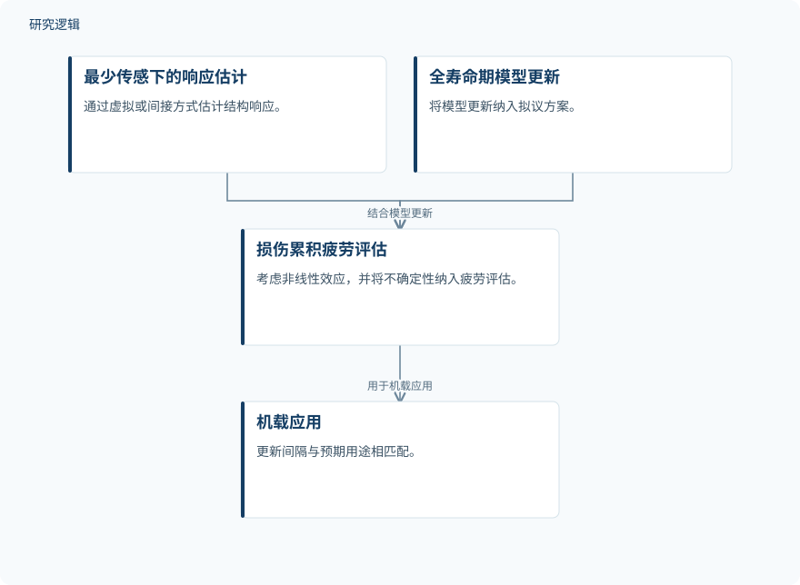

摘要解读
金属结构实时与在线疲劳评估：综述及其向移动作业机械的迁移适用性评估
Real-Time and Online Fatigue Assessment of Metallic Structures: A Review and Transferability Assessment for Mobile Working Machines
解读更新 2026-10-17 15:19 · 依据公开摘要整理，未核验全文细节
有限传感、复杂载荷与恶劣环境下，如何在移动作业机械运行时评估金属结构的疲劳？这篇范围综述梳理实时与在线评估方法，重点讨论其他工程领域的方法能否迁移到此类机械，以及落地时仍缺哪些关键环节。
文章目录
从运行信息到疲劳判断，难点在现场条件
疲劳损伤限制金属结构的服役寿命，运行期间获得的疲劳信息可为监测、维护和控制提供支持。但移动作业机械面临复杂载荷、有限传感与恶劣环境，方法能否适应这些条件，是本文关注的核心问题。
作者结合机械特征与工程经验提出实际需求，将变幅或随机载荷下的承载结构与焊接细节识别为最相关的参考情形。这意味着，迁移评估需要对照具体结构和载荷条件，而不能只看方法是否能够在线计算。
工具辅助文献整理，作者负责最终判断
这是一项范围综述，纳入55项研究，考察金属结构实时与在线疲劳评估方法及其向移动作业机械的可迁移性。主动学习工具和大语言模型辅助筛选、信息提取与初步综合，纳入资格和最终综合则由作者决定。这里的人工智能用于综述工作，不能据此认定它已用于机械疲劳预测。
依据摘要整理的理想化方案示意


概括作者提出的方案组成及衔接，不表示已经完成系统部署或效果验证，也不是论文原图。
下载 SVG图示关系说明
实线表示相邻阶段的信息流，虚线表示跨阶段联系或反馈。
最少传感下的响应估计 → 损伤累积疲劳评估：提供响应估计；全寿命期模型更新 → 损伤累积疲劳评估：结合模型更新；损伤累积疲劳评估 → 机载应用：用于机载应用
损伤累积更贴近整机监测，但证据仍有缺口
大多数纳入研究来自其他工程领域，直接面向移动作业机械的证据仍然有限。作者认为，损伤累积方法相较裂纹扩展方法，似乎更直接适配整机监测，因为它可以使用由有限传感估计得到的应力或应变历程；这不是预测精度优越性的结论。
在所综述的损伤累积方法中，非线性损伤累积与载荷顺序效应未得到处理；模型更新不常见，不确定性也很少传播至疲劳输出。这些发现指出了现有方法与实际应用需求之间的距离。
作为拟议方案，作者提出将最少传感下的虚拟或间接响应估计、全寿命期模型更新、考虑非线性效应与不确定性的损伤累积评估，以及按用途匹配更新间隔的机载应用相结合。这是理想化方案，不是摘要报告的已验证系统。
摘要不足以判断比较强度与验证范围
仅凭摘要，无法判断各研究的试件或机械样本规模、载荷覆盖、传感配置、比较基准及现场验证范围，也无法量化两类方法的性能差异。摘要未报告这些细节，不代表论文没有讨论；上述方法缺口也应限定在本综述覆盖的研究范围内。
阅读启发：关注响应估计到疲劳输出的衔接
阅读启发：进一步阅读时，可重点追问有限传感如何支撑应力或应变历程估计，以及模型更新和不确定性如何进入最终疲劳输出。也值得区分“大语言模型辅助综述”与“智能疲劳监测”两种用途，避免将文献整理工具的使用误读为监测能力已经得到验证。
以上为本站阅读启发与建议，不是论文已验证的结论。